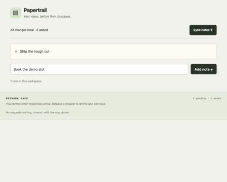
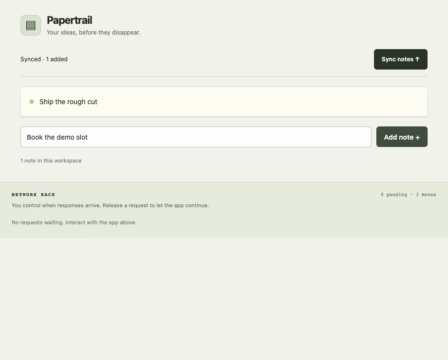
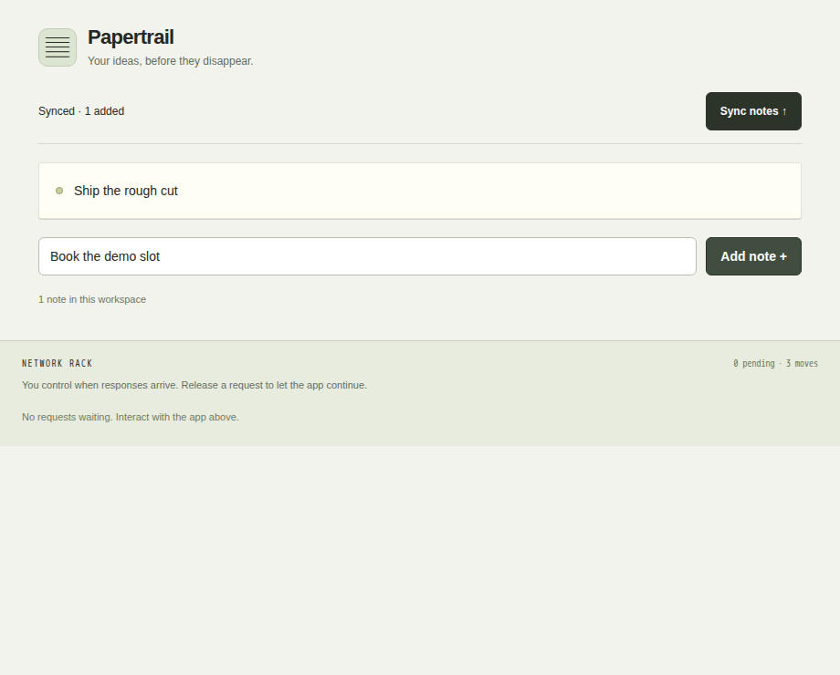
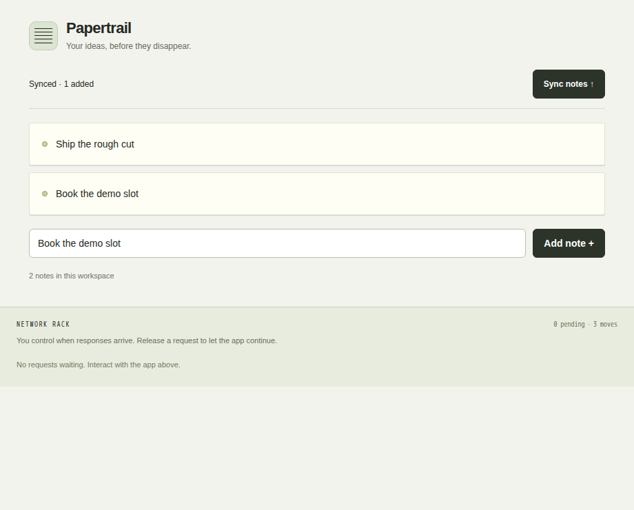

Input frame · 0 ms
3d96f85468a852c00a960d54cda8cbf5496e3bdb8b0fec7ded557a83e861c20b
A debugging game for React developers
Can you make Papertrail lose a note in three moves? Start sync, add the new note, then release the waiting save response. The buggy app overwrites your note with an old snapshot.
These standalone apps use an in-memory response schedule and no network calls. Playback is for exploration. Independent captured worker assertions below are the verification evidence.
Trigger the note bug, follow the Meta proposal into browser execution, then inspect the fix and regression test. The original narrated section includes a visible correction to its historical runtime status; the caption-led tour shows the current result. Capture context
Deepgram narration over edited actual-browser captures, with authored pointer and chapter captions. This is captured playback, with no fresh model call.
Full spoken transcript · Chapter captions (summary) · WebVTT chapters · Media inspection
Six real boundary controls passed. The five unchanged known challenges each produced three buggy failures and three fixed passes in 30 guarded browser runs. The identical exported regression then failed buggy and passed fixed in two additional VMs. All 38 VMs in the verified cohort have terminal evidence.
A root-owned 1 GiB workload cgroup inside a 2 GiB Modal VM produced exact kernel memcg/leaf/victim attribution and local OOM counters. Manual-kill and timeout controls stayed distinct. The earlier outer-memory exit137 remains inconclusive; the failed cleanup/metadata attempts remain recorded.
General live API execution stays off. This verifies the reviewed runtime and narrow schedules, not arbitrary repositories, broad reliability or production security. These runtime checks made no model calls; genuine Muse decisions are documented separately below.
This is a public derivative of one genuinely captured Meta Muse Spark Open investigation through Modal. It is a known seed, not held-out generalization. Opening this page makes no model or cloud call.
One model call · 2,839 tokens · 4 → 3 actions · 3 buggy failures / 3 fixed passes · 276.552 seconds. Six invalid minimization outcomes were rejected. Estimated inference cost: $0.00631175; total provider billing is separate.
{
"actions": [
{
"type": "click",
"target": "sync"
},
{
"type": "click",
"target": "add-note"
},
{
"type": "release",
"request": "save-1"
},
{
"type": "wait",
"target": "sync-state",
"value": "Synced · 1 added"
}
],
"candidateAssertion": {
"target": "notes",
"operator": "contains",
"expected": "Book the demo slot"
},
"rationale": "Start sync to capture stale snapshot, add note while Syncing to create optimistic update, then release save to let stale setNotes(snapshot) overwrite and lose the note while still reaching Synced completion."
}{
"actions": [
{
"type": "click",
"target": "sync"
},
{
"type": "click",
"target": "add-note"
},
{
"type": "release",
"request": "save-1"
}
],
"assertion": {
"target": "notes",
"operator": "contains",
"expected": "Book the demo slot"
},
"completion": {
"target": "sync-state",
"value": "Synced · 1 added"
},
"seed": 0,
"schedule": [
{
"id": "save-1",
"key": "save",
"response": {
"saved": true
},
"status": 200,
"optional": false
}
],
"invariantHash": "072beb8f5d60874ac281b2b3ae95148d9f2d46de456d55c8167751d4183c8951"
}Public summary · Public provenance and initial execution trace
Four actual timestamped input frames, each checked against the captured proposal’s input hash. These are recording samples, distinct from the later worker screenshots. Samples can miss fast interactions; browser action/network traces retain execution order.
3d96f85468a852c00a960d54cda8cbf5496e3bdb8b0fec7ded557a83e861c20b

19f642000041fb388f0c9f017a3aa908a045fbb1c320ba44c4e9f3ee29cd59b0
709c2f2407394b12c2553bc7e23dc6b465659d883c6a85b91991a9a0c4dea186

f8fc0f6053dab3ce6e62f3a7e49de06bde5fa1e7dab8987195649b125f575ddf
Exact exported regression test · Captured buggy test output · Captured fixed test output
Test SHA-256: ea47155bf32626691e0324645cc4934debf68f9af28d2b1dd6fc4b98ad616e48. This submitted-app test requires an authorized sandbox and explicit project directory. Do not bypass its guard to run uploaded source on the host.
Actual Node test output from the two isolated regression runs. This page starts no test or provider call.
✖ The vanishing note invariant (2971.515275ms)
ℹ tests 1
ℹ suites 0
ℹ pass 0
ℹ fail 1
ℹ cancelled 0
ℹ skipped 0
ℹ todo 0
ℹ duration_ms 3038.054059
✖ failing tests:
test at ../../tmp/regression.test.mjs:8:1
✖ The vanishing note invariant (2971.515275ms)
AssertionError [ERR_ASSERTION]: {"target":"notes","operator":"contains","expected":"Book the demo slot","actual":"Ship the rough cut","pass":false,"hash":"072beb8f5d60874ac281b2b3ae95148d9f2d46de456d55c8167751d4183c8951","completion":{"target":"sync-state","value":"Synced · 1 added"}}
'failed' !== 'passed'
at TestContext.<anonymous> (file:///tmp/regression.test.mjs:16:10)
at Test.runInAsyncScope (node:async_hooks:227:14)
at Test.run (node:internal/test_runner/test:1402:25)
at Test.start (node:internal/test_runner/test:1262:17)
at startSubtestAfterBootstrap (node:internal/test_runner/harness:387:17) {
generatedMessage: false,
code: 'ERR_ASSERTION',
actual: 'failed',
expected: 'passed',
operator: 'strictEqual',
diff: 'simple'
}
✔ The vanishing note invariant (3545.355904ms) ℹ tests 1 ℹ suites 0 ℹ pass 1 ℹ fail 0 ℹ cancelled 0 ℹ skipped 0 ℹ todo 0 ℹ duration_ms 3630.421858
Observed: Ship the rough cut
Observed: Ship the rough cutBook the demo slot

Observed: Ship the rough cut

Observed: Ship the rough cutBook the demo slot

Observed: Ship the rough cut
Observed: Ship the rough cutBook the demo slot

Text alternative: Sync → Add note → Release save-1. The buggy app loses “Book the demo slot”; the fixed app retains it. Recordings are worker captures, separate from your current playback session.
Camp Supply accepted a 10% coupon but kept the old total. A separate Muse investigation proposed three actions, minimized to two, and verified three buggy failures plus three fixed passes. The exact exported test also failed buggy and passed fixed.
Inspect the first-party held-out coupon case →
The app and assertion were frozen before model use; no witness action plan or hints were supplied. This is one first-party evaluation case, not a broad benchmark or a claim about model training data.
The five gallery cases use authored plans with captured browser results. The note demo is one known seed; the coupon record is a separate first-party pipeline-held-out example. Three repeats under one schedule are repeatability evidence, not broad reliability. General uploaded-app live execution remains disabled. Current runtime verification is documented separately above.
The workspace endpoint and personal filesystem paths are redacted in public derivatives. Fixture source, proposal/action/assertion payloads and six result files are preserved. See transformation receipt, file hashes and package audit.